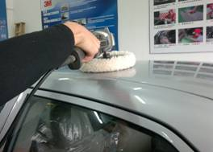

当前位置：首页 > 实训项目与考核 > 实训项目清单
项目流程
表4 汽车漆面研磨与抛光流程
| 环节 | 项目 | 具体程序 | 操作目的及 注意事项 | 作业示意图 |
|---|---|---|---|---|
| 1 | 准备工作 | 1）准备相关的清洗用品及工具设备。 2）检查车辆状况，如发现车身刮蹭或者划痕，需要及时告知车主。 3）将车驻停在清洗工位，确保施工安全，检查门窗状态及重点清洗部位。 |
操作目的： 1）做好准备工作 |
|
| 2 | 漆面清洗 | 1）将车身清洗干净，对有封漆蜡的车身必须进行开蜡处理；若有必要进行特种清洗，将顽固污渍去除彻底，并吹干车身。 | 操作目的： 1）清洗干净车身漆面 |
|
| 3 | 选择研磨剂 | 1）根据漆面质量及状况，如厚度、硬度、耐磨性、污染程度等合理选择研磨剂，应优先选择微切研磨剂。 | 注意事项： 1）根据漆面的损伤程度选择研磨剂 |
|
| 4 | 准备研磨机 | 将海绵研磨盘浸湿，安装在研磨机上 研磨机空转5s，将多余的水分甩干。 |
操作目的： 1）将海绵研磨盘湿润 |
|
| 5 | 涂抹研磨剂 | 1）先将研磨剂摇晃均匀。 2）然后倒在漆面上，用研磨盘将研磨剂涂抹均匀。 |
操作目的： 1）在漆面涂抹研磨剂 |
|
| 6 | 研磨 | 1）将研磨机转速调整到1400-1800r/min，启动研磨机。 2）保持研磨盘与漆面基本平行，沿车身方向作直线状来回移动。 3）研磨盘经过的长条轨迹之间相互覆盖1/3，不遗漏大面积漆面。 4）一般先研磨右半车身，然后再研磨左半车身，右半车身的研磨顺序为：右车顶-右前发动机盖-右前翼子板-右前车门-右后车门-右后翼子板-后备箱盖右侧。左半车身按相同的顺序研磨。 |
注意事项： 研磨机的转速要调整正确 研磨的顺序 对于车身边锋、喷漆保险杠等不宜使用研磨剂研磨的位置，可用干毛巾沾研磨剂采用手工方法进行研磨 |
 |
| 7 | 清洗并验收 | 1）漆面研磨后，用清水对整个车身进行清洗并擦干，彻底洗去残余研磨剂。 2）对研磨效果进行检查验收 |
注意事项： 1）检查漆面有没遗漏的地方，漆面色泽时候一致，漆面有无明显旋纹及划伤。 |
|
| 8 | 抛光 | 1）抛光时应选用专用的抛光盘。 2）抛光操作步骤与研磨施工基本相同。 |
注意事项： 1）抛光剂用量要适中，若抛光剂过多，切削力差，反而会打滑；若抛光剂过少，则会损伤漆面 |
上一页 1 2 3 4 5 6 7 8 下一页